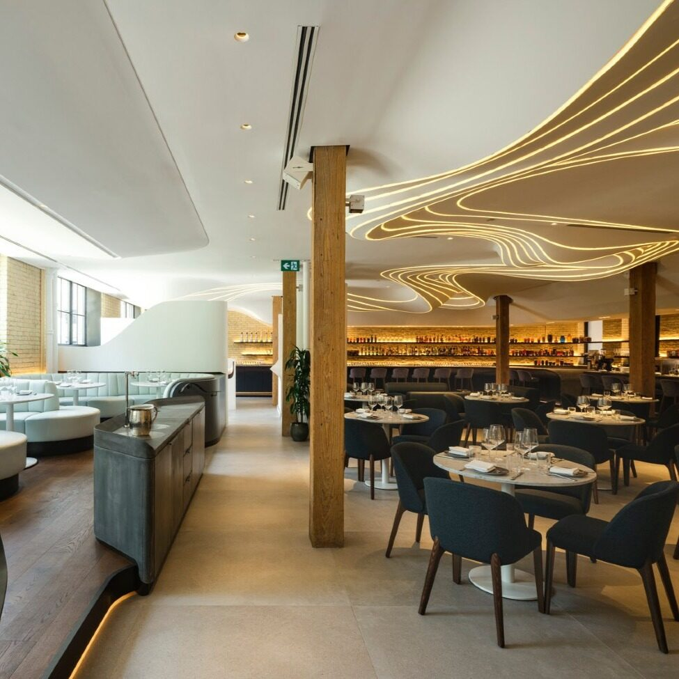
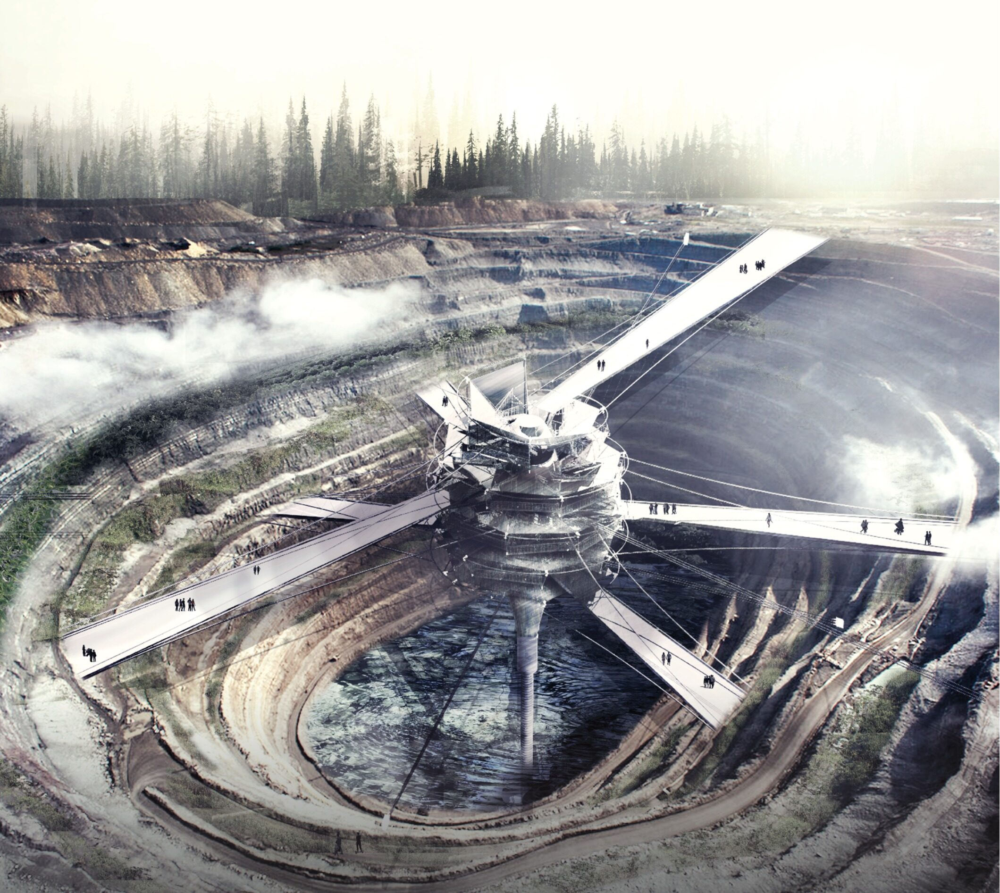
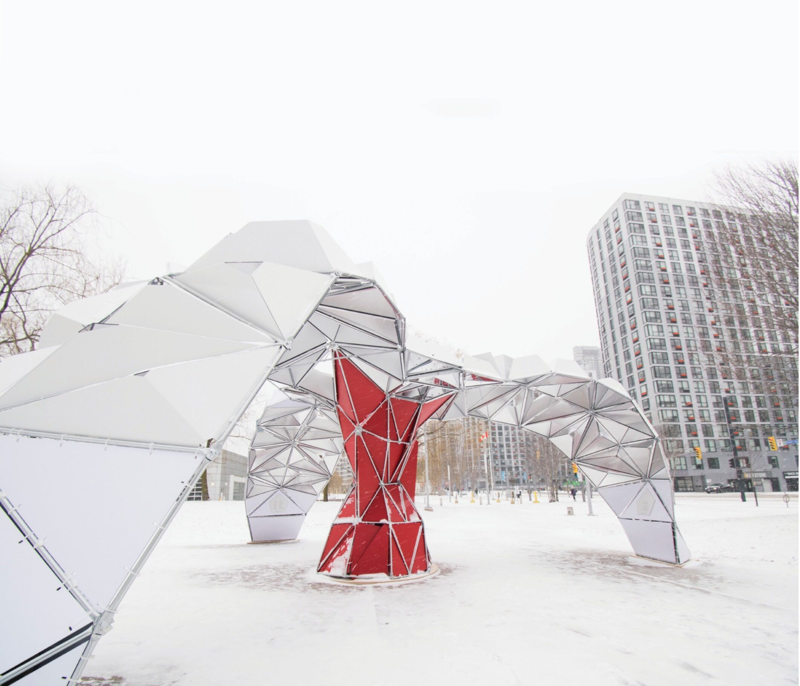

Internship at PARTISANS
Professional · Architecture · Interior Design · Detailing

ACSA / AISC Steel Design Competition
Competition · Architecture · Steel Design · Detailing

Icebreakers Festival
Installation · Fabrication · Computational Design
